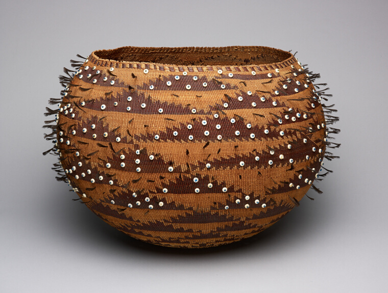
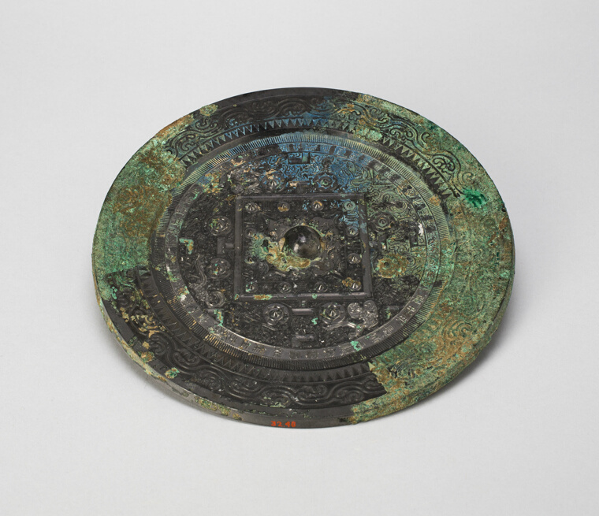
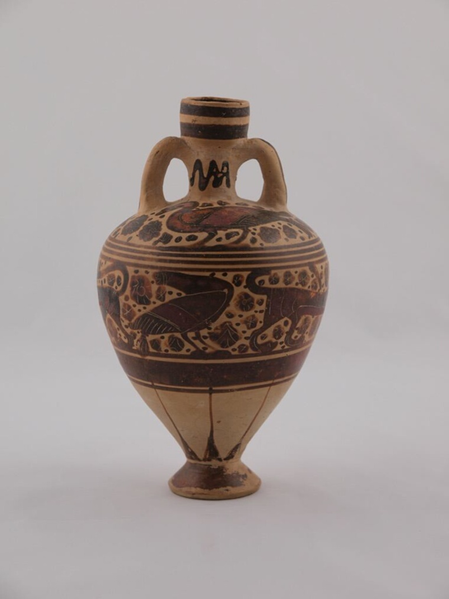
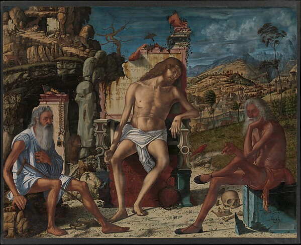
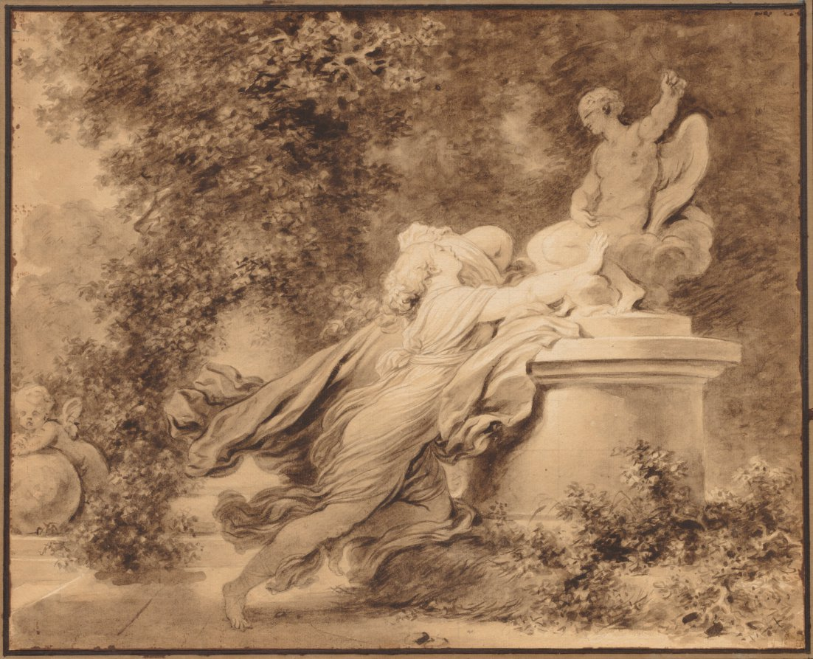

stars, constellations, the names we gave the dark by accident on purpose.
ok so i went down a hole at like 2am about how every culture looked at the EXACT same orion and made up something completely different. i taped all of it here. mind the mess.

each clamshell bead catches light like a tiny mirror. it's a map of the heavens you could hold in two hands — precious AND practical, made for the one day that mattered most. the patience!!
Pomo, Northern California, United States · Wedding Basket, c. 1895 · plant fibers, feathers, glass & clamshell beads · Art Institute of Chicago
رِجْل الجبّار
Rigel — "foot of the giant"
“the foot of Orion. the name derives from Arabic astronomical tradition dating back over a thousand years.”
the ancients looked up & didn't see lights. they saw a GIANT, with a foot reaching toward us. and that name held for a thousand years.
Arabic astronomical tradition · Wikipedia, List of Arabic star names
chasms, trenches, & blood-red colors
“sometimes on a fine night we see a variety of appearances that form in the sky: 'chasms' for instance and 'trenches' and blood-red colors.”
2,300 years ago and it's STILL that exact feeling — you look up and the sky goes alien on you. cracks. depth. no explanation.
Aristotle, Meteorology · astronomy.com

they turned bronze into a map of something — sky patterns? the whole universe? — worn green like it's been keeping secrets for two thousand years. the center square anchors it, the rings pulse out.
Mirror with "TLV" Pattern · China, Eastern Han dynasty (25–220 CE) · Bronze · Art Institute of Chicago · CC0
Three brothers of the King-fish clan went fishing but caught only king-fish. Their clan law forbade eating these fish, so they had to release them. Eventually one brother broke this law and consumed a king-fish. The Sun-woman (Walu) witnessed this and became enraged, creating a waterspout that lifted the brothers skyward, where they remain visible as stars. The three brothers are the three stars across the centre of the canoe (Orion's belt); the Orion nebula is a fish trailing on a fishing line.
this does something greek myth NEVER does — it's a lesson about consequences, written straight into the sky. every time orion rises, it's a warning that breaking sacred law carries weight. i can't stop thinking about that.
Yolŋu people of Arnhem Land, Australia (documented by Ray Norris & Duane Hamacher) · aboriginalastronomy.blogspot.com
“white stripes like rods appeared within intensive red vapor”
they watched red vapor fill half the northern sky with rods of white light, and they prayed to buddha, certain the world was ending. it's such a human response to a beauty you have no word for. awe & terror, one breath
Japanese eyewitness account, Shingu historian · Smithsonian Magazine
“Baiame is the creation ancestor, seen in the sky as Orion — nearly identical in shape to his Greek counterpart. He pursues the Pleiades sisters (Mulayndynang) and trips and falls over the horizon as the constellation sets, which is why he appears upside down.”
same exact stars we call Orion and the Pleiades. completely different universe. a hunter who STUMBLES, chasing the sisters, and you can still catch him falling, upside down, when he sets.
Wiradjuri Aboriginal tradition (documented by Ray Norris & Duane Hamacher) · theconversation.com/kindred-skies…
the Hand of Orion
Yad al-Jauza'
yad al-jauza literally means hand. like the astronomers were pointing straight up — "see? that's the giant's hand." golden-age scholars handed the sky a language that stuck for a thousand years.
Arabic astronomical tradition · Muslim Heritage · muslimheritage.com/arabic-star-names
infinite power, wrapped in swaddling clothes. god was small once, vulnerable, the size of a manger — and it doesn't diminish him AT ALL. that "cheerful confidence" at the end gets me every time. certainty arrived at by love, not logic.
— William Cowper, Jehovah Jesus · PoetryDB

a tiny oil container with a fish swimming around it — and a fish (the Orion nebula) trails on a line in the canoe story two clips up. i taped them near each other on purpose. 2,600 yrs old!!
Amphoriskos (Container for Oil) · Greek; Corinth, 600–575 BCE · terracotta, black-figure · Art Institute of Chicago · CC0

figures sat under a wide quiet sky, contemplating. the kind of waiting where you keep looking up. contemplative still as a held breath
The Meditation on the Passion · Vittore Carpaccio, ca. 1490 · oil & tempera on wood · The Metropolitan Museum of Art · Open Access

a woman dissolving into velvet and stone, cherubs hovering above like they invented the whole idea. it's so self-aware about wanting to be wanted that it loops all the way back around to honest. cherubs: 2
Jean-Honoré Fragonard (French, 1732–1806), c. 1781 · Cleveland Museum of Art · CC0
same stars. a hundred different skies. all of them true. ✨
ok i have to sleep. i'll cross-tape the comet ones tomorrow, i promise.
this one ↗